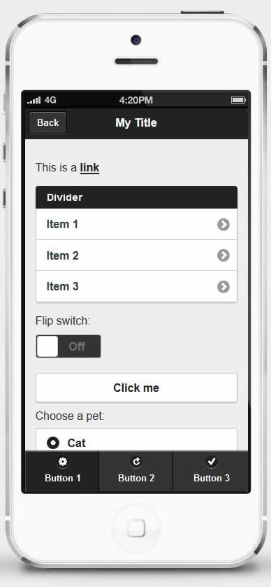
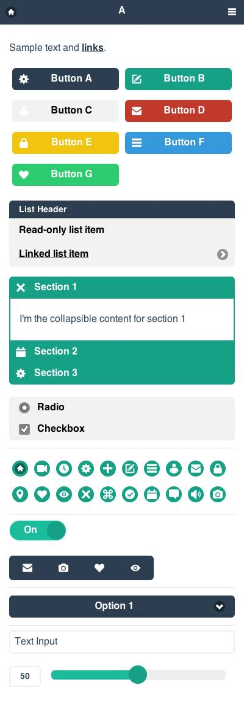
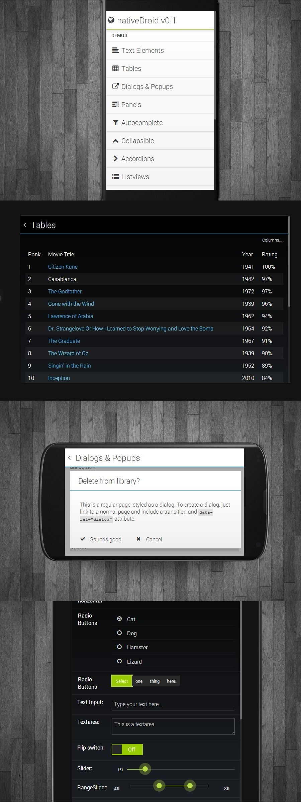
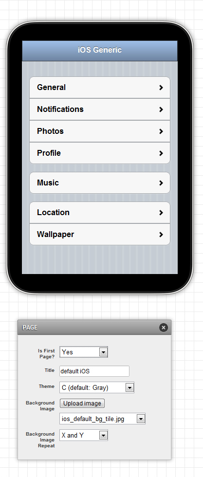
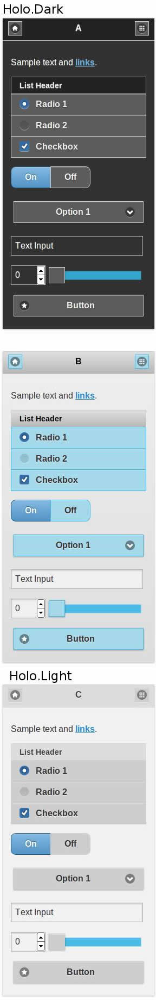
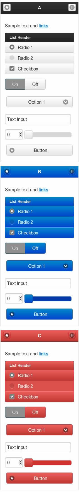
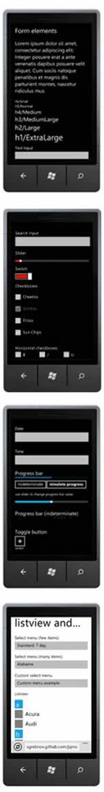
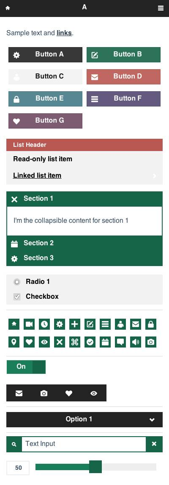
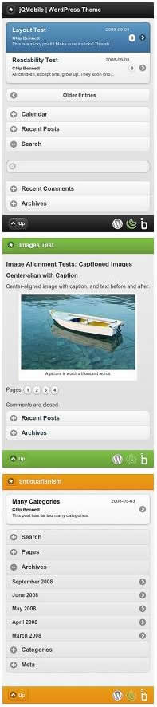
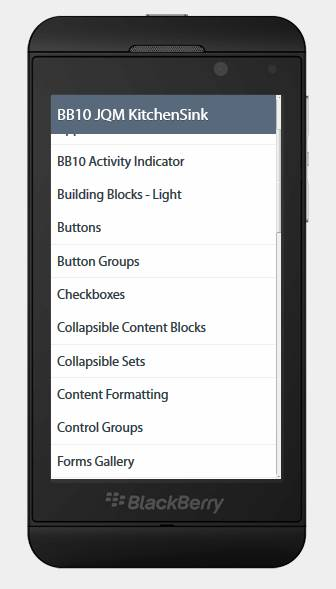

Graphite风格  原文链接：http://caibaojian.com/10-best-free-jquery-mobile-theme.html 支持版本: jQuery Mobile 1.3.2 链接和演示: http://driftyco.github.io/graphite/ Flat UI风格
Flat UI风格  在 Flat-UI 的基础上创建 原文链接：http://caibaojian.com/10-best-free-jquery-mobile-theme.html 支持版本: jQuery Mobile 1.3.2 官网: https://github.com/ququplay/jquery-mobile-flat-ui-theme 演示: http://ququplay.github.io/jquery-mobile-flat-ui-theme/ Graphite风格 nativeDroid风格
nativeDroid风格  原文链接：http://caibaojian.com/10-best-free-jquery-mobile-theme.html 支持版本: jQuery Mobile 1.3.2 链接和演示: http://nativedroid.godesign.ch/ Flat UI风格 IOS风格
IOS风格  原文链接：http://caibaojian.com/10-best-free-jquery-mobile-theme.html 支持版本: jQuery Mobile 1.2 链接: https://github.com/taitems/iOS-Inspired-jQuery-Mobile-Theme 演示: http://taitems.github.io/iOS-Inspired-jQuery-Mobile-Theme/ nativeDroid风格 Holo-inspired风格
Holo-inspired风格  原文链接：http://caibaojian.com/10-best-free-jquery-mobile-theme.html 支持版本: jQuery Mobile 1.2 链接: https://github.com/taitems/iOS-Inspired-jQuery-Mobile-Theme 演示: http://taitems.github.io/iOS-Inspired-jQuery-Mobile-Theme/ IOS风格 Bootstrap风格
Bootstrap风格  在Bootstrap的基础上创建，这个主题覆盖了jQuery默认的A-E的主题。 原文链接：http://caibaojian.com/10-best-free-jquery-mobile-theme.html 支持版本: jQuery Mobile 1.2 (非官方版本，也可运行于1.3.2版) 链接: https://github.com/commadelimited/jQuery-Mobile-Bootstrap-Theme 演示: http://andymatthews.net/code/jQuery-Mobile-Bootstrap-Theme/buttons.html Holo-inspired风格 Metro风格
Metro风格  原文链接：http://caibaojian.com/10-best-free-jquery-mobile-theme.html 支持版本: jQuery Mobile 1.1 链接: https://github.com/sgrebnov/jqmobile-metro-theme 演示: http://sgrebnov.github.io/jqmobile-metro-theme/samples/jqm-public-demo/index.html Bootstrap风格 Square-UI风格
Square-UI风格  原文链接：http://caibaojian.com/10-best-free-jquery-mobile-theme.html 支持版本: jQuery Mobile 1.3.2 链接: https://github.com/ququplay/jquery-mobile-square-ui-theme 演示: http://ququplay.github.io/jquery-mobile-square-ui-theme/ Metro风格 WordPress风格
WordPress风格  原文链接：http://caibaojian.com/10-best-free-jquery-mobile-theme.html 支持版本: jQuery Mobile 1.2 链接: http://www.mobilizetoday.com/freebies/jqmobile 演示: http://www.mobilizetoday.com/preview/jqmobile/ Square-UI风格 BlackBerry风格
BlackBerry风格  原文链接：http://caibaojian.com/10-best-free-jquery-mobile-theme.html 支持版本: jQuery Mobile 1.2 链接: http://blackberry.github.io/jQueryMobile-BB10-Theme/#gettingStarted 演示: http://blackberry.github.io/jQueryMobile-BB10-Theme/kitchenSink/index.html WordPress风格